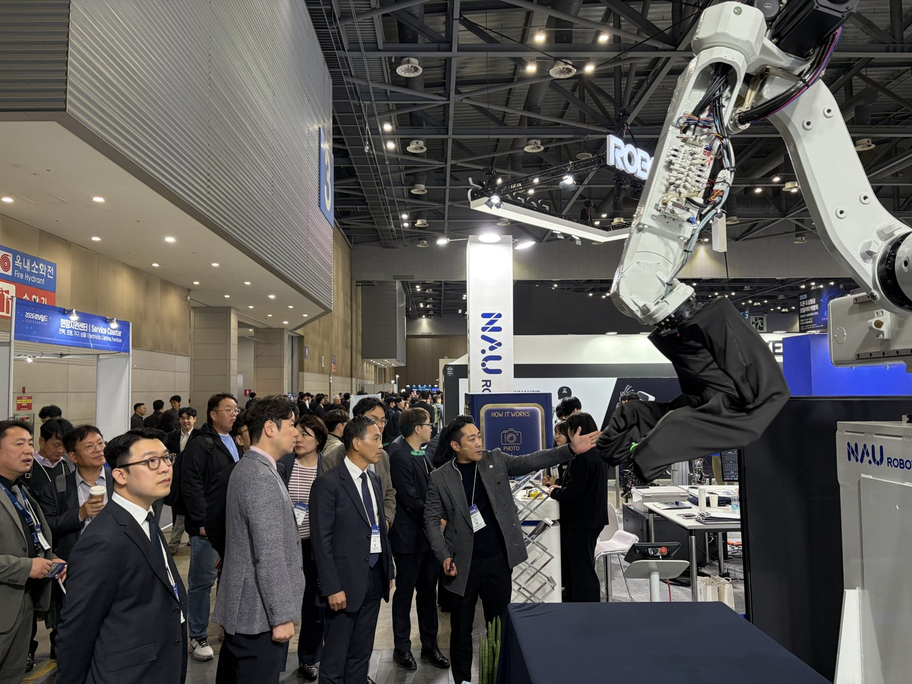
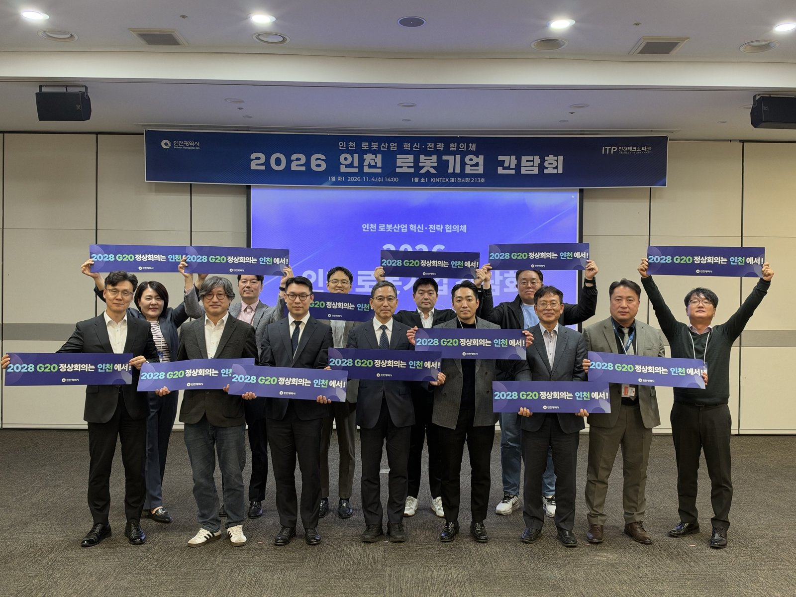

인천 로봇기업 8곳 "현장 같은 시험장 달라"…로봇랜드 테스트베드 밑그림
예산안엔 실증센터 13억·로봇랜드 운영 34억
AI경제저널=김갑봉 기자 | 인천시가 인천로봇랜드에 로봇을 시험해 볼 실증 테스트베드를 만들기 위해 지역 로봇기업의 요구를 모았다. 시는 4일 경기 고양 킨텍스에서 「인천 로봇기업 간담회」를 열었다고 밝혔다.
하루 뒤 시가 내놓은 2027년 예산안에는 피지컬 인공지능 실증센터 13억 원이 담겼다. 로봇랜드 시설 운영 34억 원과 로봇산업 혁신성장 지원 22억 원도 있다. 테스트베드는 이제 조성 방안을 마련하는 단계다.

기업이 원한 것은 "현장 같은 시험장"
간담회는 국내 최대 로봇전시회 「2026 로보월드」(11월 4~7일) 개막에 맞춰 열렸다. 나우로보틱스, 유일로보틱스 등 부품·완성품·서비스 분야 인천 로봇기업 8곳이 나왔다. 한국전자기술연구원(KETI) 마이스터로봇화실증지원센터장과 인천테크노파크 로봇센터장도 함께했다.
기업들은 미리 조사한 분야별 실내·외 시설 규모와 공간 구성, 실증 인프라에 대한 요구를 내놨다. 시는 이 의견을 로봇랜드 실증 테스트베드 조성방안에 반영하겠다고 밝혔다. 간담회 뒤 참석자들은 로보월드 전시장의 인천 로봇기업 부스를 둘러봤다.
김상길 시 미래산업본부장은 "피지컬 AI 경쟁력은 실제 현장과 같은 환경에서 로봇을 시험하고 데이터를 쌓을 수 있는 실증 기반에서 나온다"고 말했다. 그는 수요조사와 간담회 의견을 검토해 조성방안에 반영하겠다고 했다.

로봇랜드 실증 테스트베드가 인천에 말하는 것
첫째, 기업이 먼저 요구한 것은 장비가 아니라 공간이다. 인천 기업 8곳은 분야별 실내·외 시설 규모와 공간 구성을 먼저 내놨다. 로봇이 실제 일터에 들어가려면 그 일터와 닮은 곳에서 시험해야 한다는 뜻이다. 시가 조성방안에 이 요구를 얼마나 담느냐가 테스트베드의 쓸모를 가른다.
둘째, 돈은 아직 운영과 실증센터 몫이다. 내년 예산안 개요에서 로봇과 닿는 항목은 셋이다. 피지컬 AI 실증센터 확충·운영 13억 원, 로봇랜드 시설 운영 34억 원, 로봇산업 혁신성장 지원 22억 원이다. 테스트베드 조성비라는 이름의 항목은 개요에 없다.
셋째, 분양과 시험장의 순서가 맞물려야 한다. 시는 로봇랜드를 올해 말 분양할 예정이라고 밝혔다. 분양으로 들어올 기업과 테스트베드를 쓸 기업이 한 생태계로 묶이려면 조성방안과 분양 일정이 함께 가야 한다. 시의회 예산 심의는 이 순서를 따져 볼 첫 자리다.
청라를 AI 로봇·모빌리티 거점으로
시는 로봇랜드를 민선 9기 미래산업 전략 「ABC+E」의 인공지능 축과 묶겠다는 구상이다. ABC+E는 인공지능·바이오·콘텐츠·에너지다. 청라 일대에는 AI 커넥티드카 기술개발과 사이버보안 인증·평가 기반을 모은다. 로봇과 모빌리티가 만나는 거점으로 키운다는 계획이다.
내년 예산안에서 첨단산업 육성 몫은 3166억 원이다. 시는 지난 7월 출범한 산·학·연·관 협의체 「인천 로봇산업 혁신전략 협의체」를 통해 기업 의견을 계속 받겠다고 했다.
참고문헌
- 인천광역시 첨단산업과(2026). 인천시, '인천 로봇기업 간담회' 개최, 로봇기술 실증 기반 모색(보도자료). 2026년 11월 4일. https://www.incheon.go.kr/IC010205/view?repSeq=DOM_0000000015893819
- 인천광역시 예산담당관(2026). 인천시, 2027년 예산안 15조 9천억 원 편성, 민생 지키고 인천 제값 찾는다(보도자료). 2026년 11월 5일. https://www.incheon.go.kr/IC010205/view?repSeq=DOM_0000000015900573
- 인천광역시(2026). 2027년 예산안 개요(위 보도자료 붙임). 2026년 11월.
[사진 출처]
- [사진1·2] 인천광역시 보도자료 「인천시, ‘인천 로봇기업 간담회’ 개최, 로봇기술 실증 기반 모색」 사진, 공공누리 제1유형, 2026.11.4., https://www.incheon.go.kr/IC010205/view?repSeq=DOM_0000000015893819
관련기사
- 인천시 "국비 1306억 더"…노동감독관 인건비·인천e음·M버스
- 청라 영상단지 준공 2031년으로 4년 늦춰…IFEZ, 콘텐츠·바이오로 판 짠다
- 서해구, 해사국제상사법원 본청사 유치 요청…2028년 3월 개원까지 16개월
저작권자 © AI경제저널 무단전재 및 재배포, AI학습 및 활용 금지